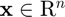
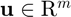
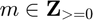
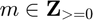

msim
Simulate time response of MTI model to arbitrary inputs
Contents
Description
Use msim to simulate real-valued multilinear time-invariant state-space models in continuous or discrete time, either explicit using the mss class or implicit using the dmss class.
To simulate an MTI system, a corresponding tensor contracted product needs to be solved for each equation. For example, recalling from mss, for a continuous-time explict MTI state-space model, the state transition equation contracted product is as follows:

where  and , represent the states and inputs, of sizes  and =0}$" style="width:62px;height:13px;"> respectively, and
and =0}$" style="width:62px;height:13px;"> respectively, and  is the state-space parameter tensors. While
is the state-space parameter tensors. While  can have an arbitrary rank, monomial tensors are always rank 1, e.g.,
can have an arbitrary rank, monomial tensors are always rank 1, e.g.,  canonical polyadic decomposition is:
canonical polyadic decomposition is:
![$$
\mathrm{M}\left(\mathbf{x},\mathbf{u}\right) = \left[
\left(\begin{array}{c}1\\x_1\end{array}\right),
\cdots,
\left(\begin{array}{c}1\\x_n\end{array}\right),
\left(\begin{array}{c}1\\u_1\end{array}\right),
\cdots,
\left(\begin{array}{c}1\\u_m\end{array}\right)
\right],
$$](msimDoc_eq08722220137429195979.png)
where each factor has a single column, i.e., rank 1.
The MTI toolbox stores all tensor parameters in CPN1 format, which means for this example that the state-space parameter tensors is reformulated as follows:
![$$
\mathrm{F} = \left[\mathbf{F}_1, \mathbf{F}_2, \ldots,
\mathbf{F}_{n+m}, \mathbf{F}_{\phi}\right] .
$$](msimDoc_eq01691190636832349367.png)
Ultimately, this change of format allows for a efficient evaluation of the state transition contracted product:

where  is the element-wise Hadamard product. Naturally, this simplifcation applies to all tensor contracted product required by MTI systems. For further details, please refer to [1].
is the element-wise Hadamard product. Naturally, this simplifcation applies to all tensor contracted product required by MTI systems. For further details, please refer to [1].
Syntax
msim(msys,u,t,xo)
y = msim(msys,u,t,xo)
y = msim(msys,u,t,xo,interpolationMethod)
[y,tOut] = msim(msys,u,t,xo)
[y,tOut, x] = msim(msys,u,t,xo)
Description
Response Plots and Data
y = msim(msys,u,t,xo) returns the simulated time response of the MTI dynamic system model msys (either explicit using the mss class or implicit using the dmss class) to the input history (t,u) with initial state values x0. For more details on dmss simulation see dmsim. The vector t specifies the time samples for the simulation. For single-input systems, the input signal u is a vector of the same length as t. For multi-input systems, u is an array with as many rows as there are time samples (length(t)) and as many columns as there are inputs to msys. The function returns the system response y, sampled at the same times t as the input (using zero-order hold as default for continuous time system models). For single-output systems, y is a vector of the same length as t. For multi-output systems, y is an array having as many rows as there are time samples (length(t)) and as many columns as there are outputs in msys.
y = msim(msys,u,t,xo,interpolationMethod) allows to change or deactivate the interpolation method for the simulated signals of continuous time system models. interpolationMethod can be "zoh" , "foh" (linear interpolation) or "none" (default)(the time steps of the ode solver will be returned).
[y,tOut] = msim_) this formulation also returns the time samples used for the simulation in tOut.
[y,tOut, x] = msim_) this formulation also returns the state trajectories x. x is an array with as many rows as there are time samples and as many columns as there are states in msys.
Examples
% LTI model A = [-1.5 -3; 3 -1]; B = [1.3; 0]; C = [1.15 2.3]; D = 0; lsys = ss(A,B,C,D); % LTI model % MTI representation F = CPN1(eye(3),[A,B]); % Transition tensor G = CPN1(eye(3),[C,D]); % Output tensor msys = mss(F,G); % MTI model % Simulation t = 0:0.05:8; % time vector u = zeros(length(t),1); % input sequence u(t>=2) = 1; % step function x0 = [-0.2 0.3]; % initial state [ym, tm, xm] = msim(msys, u, t, x0); [yl, tl, xl] = lsim(lsys, u, t, x0); % Compare result plots subplot(1,2,1), plot(tm,xm) subplot(1,2,2), plot(tl,xl)

References
[1] Lichtenberg, Gerwald; Pangalos, Georg; Cateriano Yáñez, Carlos; Luxa, Aline; Jöres, Niklas; Schnelle, Leona; Kaufmann, Christoph (2022): Implicit multilinear modeling. In at - Automatisierungstechnik 70 (1), pp. 13–30. DOI: 10.1515/auto-2021-0133.